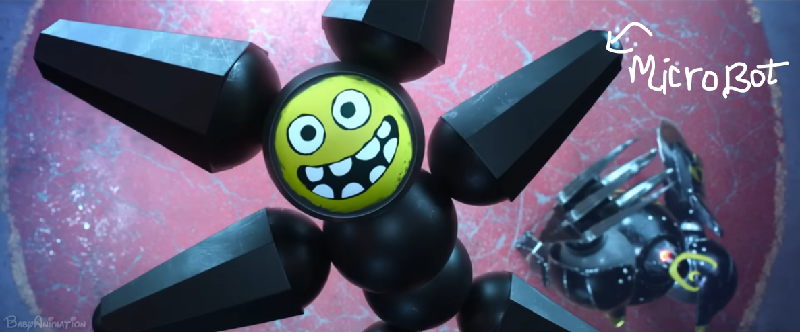

As my finger tips ran across the neon-lit keycaps of my laptop, I could hear the sound of each key press echoing through my room.
My eyes drifted to the section of the screen, and there it was, I finally got its background color fixed. It was a website.
"Within moments I am gazing at this seductive city as if at any moment a portal would appear and a metal arm would pull me into the city through a hologram. The city is drenched in soft rain and neon lighting. As the rain hits the ground and each droplet unites with purple radiance, creating a unique glow every second.
At a distance, I see a hologram glitch of a huge topless woman with a sublime body outside a brothel. As I am walking deeper into the city where this big passage seems to be branched into many narrow ones. I hear “Yeah, that's my Babyyy!” from what it looks like a group of teenagers.
I am starting to walk towards them and I can already hear the sound of servos moving in harmony, and see the reflection of the metallic blades of a mini robot. I can see the rough pattern carved on the bright green colored pcb exposed through the metallic frame. I can see the angles, the inverse trigonometry, the coordinates of its arm on the cartesian plane. I can see the carbon fibre moulded into the shape of a microbot. I can hear the sound of a circular blade hitting the ground at four thousand and twelve rpm. And I can feel each line of code turning into a beam of photons."

It was fascinating.
"Just as I am about to cheer for a bot cosplaying ‘the minecraft spider‘, I hear a loud noise. It was the sound of defeat and utter destruction of ‘Spider the cosplayer‘. Two of its legs flew just two inches away from my ear splitting in two.
As I bend down to pick this very cool looking LED which was a part of spider‘s eye, it feels weird as if it has no texture and it‘s missing a third dimension."
It was that moment when my pov shifted from being a wanderer who has fallen in love with the beauty of this stunning litted world to someone sitting at a desk in a room painted in a bland green color where the only source of light is an old white bulb and looking at the browser tab which says — “Cyberpunk 4 gameplay - Youtube.com”.
Now, I know that I love untangling wires and adding fillets to the edge of a cube and switching through layers of pcb and inverting a matrix more than changing the ‘background color‘ of a website.
— Mohammad Sarfaraz.